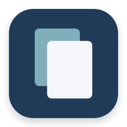
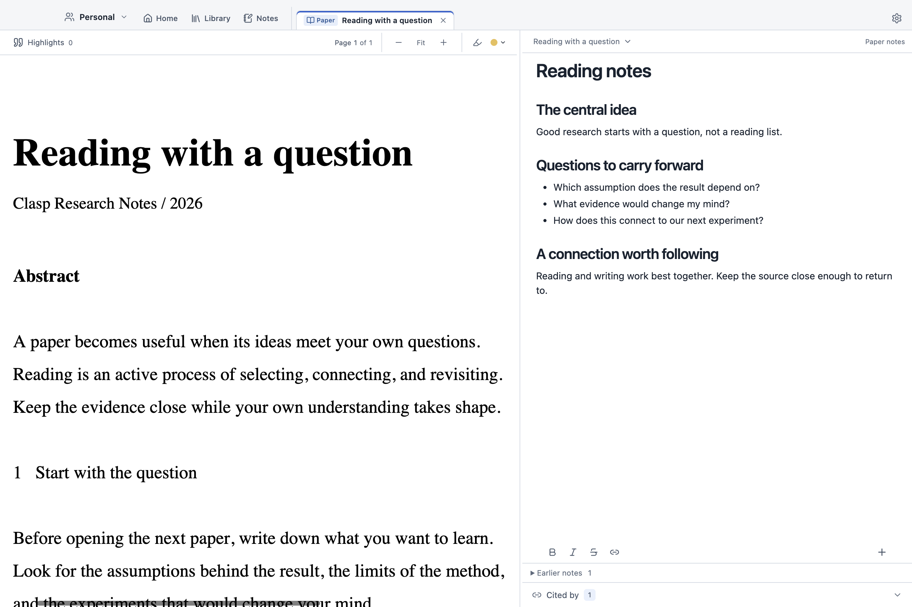
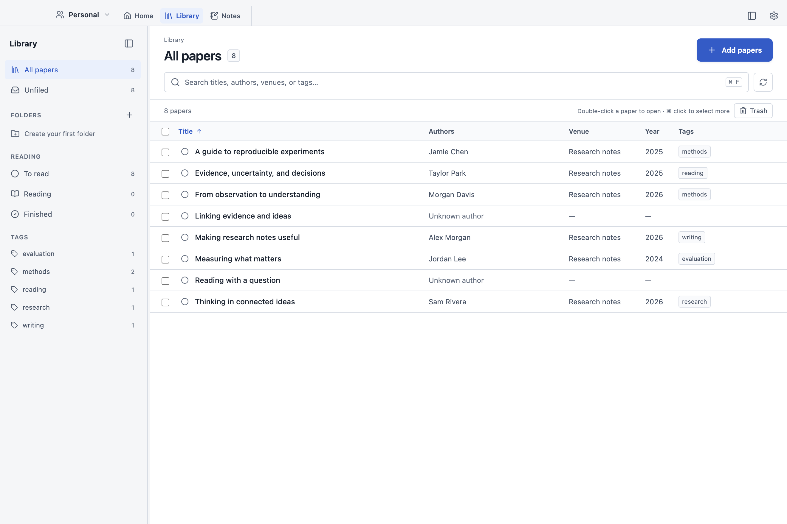

Stay with the argument.
Read a PDF beside its own note. Highlight a passage and bring it into your writing, with a link back to the source.

ClaspA WORKSPACE FOR RESEARCH
Read closely. Make connections. Turn a collection of papers into something you can build on.
Download ClaspVersion 1.1.1 · Windows download available
From the passage
to the next question.
CONTEXT, KEPT CLOSE
Give each paper a place for the questions, passages, and observations that make it yours.

Read a PDF beside its own note. Highlight a passage and bring it into your writing, with a link back to the source.
Write independent research notes. Type @ to connect papers and ideas, then follow those links without losing your place.
Keep a private Personal workspace or share one with collaborators. Edit notes and PDF highlights together, with view or edit access.
A LIBRARY YOU CAN RETURN TO
Bring in a local PDF or import a paper from a scholarly link. Organize your reading with folders, tags, and reading status.
Notes stay in Markdown. Equations, tables, images, and citations belong right beside the text.

MAKE ROOM FOR YOUR NEXT IDEA
Version 1.1.1
Sign in to start your workspace.
macOS 13 or later · M1 or newer
Mac release detailsThe Mac download is awaiting Apple notarization. Check the release details for availability.
Windows 10 or later · x64
Download for WindowsRun the installer. This release is unsigned; Windows may show an unknown publisher warning.
Release notes and checksums · Chrome connector currently available on macOS.
BEFORE YOU BEGIN
Yes. Clasp uses an account for your private Personal workspace and the shared workspaces you can access. Sign in inside the app to get started.
Previously downloaded workspaces and initialized notes open from the local cache. Edits save locally while disconnected. Initial sign-in, a workspace’s first download, and synchronization need an internet connection.
You can import local PDFs, scholarly links, or an existing Obsidian vault. Your notes use Markdown, and highlights can be exported as XFDF or in an annotated PDF.
The Mac download is for Apple Silicon Macs (M1 or newer) running macOS 13 or later. The Windows installer is for 64-bit Intel and AMD PCs running Windows 10 or later. An Intel Mac build and native Windows ARM build are not included in this release.
Open an issue in the Clasp downloads repository. Include your operating system, Clasp version, and the steps that reproduce the problem. Please leave private papers and account information out of public reports.